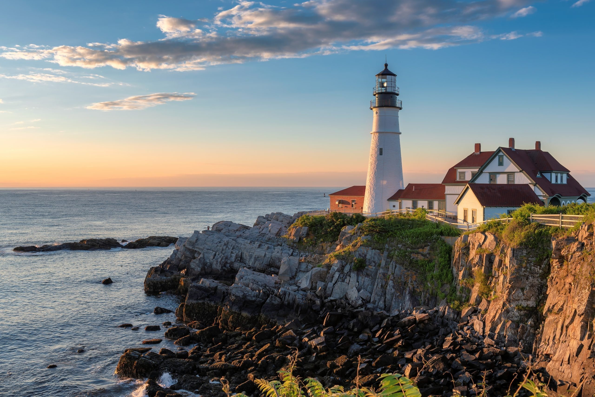

Locally Roasted Free-Trade Coffe
Indulge in the aroma of freshly ground roast coffe. Specialty drinks are avaiable hot or Cold.
Specialty Pastries
Enjoy a selection of our fresh-baked, organic pastries, including fresh-fruit muffins, scones, croissants, and cinnamon rolls.
Lunctime is Anytime
Savor delicious wraps and sandwiches on heartym whole-grain breads with locally-grown salad, fruit and vegetables.
Panoramic View
Take in some scenery! The top of our lighthouse offers a panoramic view of the countryside. Challenge your friends to climb our 100-stair tower.